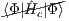
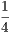

∑
klcd⟨kl||cd⟩tklcd
∑
klcd⟨kl||cd⟩tklcd 22 term into linked and unlinked contributions.
22 term into linked and unlinked contributions. (ab)∑
klcd⟨kl||cd⟩tijact
klbd -∑
klcd(ij)⟨kl||cd⟩tikabt
jlcd
(ab)∑
klcd⟨kl||cd⟩tijact
klbd -∑
klcd(ij)⟨kl||cd⟩tikabt
jlcd ∑
klcd⟨kl||cd⟩tijcdt
klab +
∑
klcd⟨kl||cd⟩tijcdt
klab +  (ij)∑
klcd⟨kl||cd⟩tikact
jlbd
(ij)∑
klcd⟨kl||cd⟩tikact
jlbdThe CEPA methods are techniques for computing dynamic correlation energy on top of a Hartree-Fock (HF) reference. For convenience, define a correlation energy Ec and a correlated Hamiltonian Ĥc:
| Ec | = Ee - EHF | Ĥc = Ĥe - EHF | |||||
| Obeying the convention that indices i,j,k... correspond to occupied orbitals and a,b,c,... to virtual orbitals, we also define a doubles excitation operator: | |||||||
| 2|Φ⟩ | = ∑ ijabtijab|Φ ijab⟩. | ||||||
| Ec | = ⟨Φ|Ĥc|Φ⟩ | (1) |
| Ectijab | = ⟨Φ ijab|Ĥ c|Φ⟩ + ⟨Φijab|Ĥ c|Φ⟩ + ⟨Φijab|Ĥ c2|Φ⟩ | (2) |
| The simplified energy expression (1) is: | ||||||||||||||
| Ec | =  + ∑ klcdtklcd⟨Φ|Ĥ c|Φklcd⟩ | |||||||||||||
| Ec | = ∑
klcd⟨kl||cd⟩tklcd | |||||||||||||
| For the amplitude equations, we can split up the 22 term into linked and unlinked contributions. | ||||||||||||||
| ⟨Φijab|Ĥ c22|Φ⟩ | = 2 ∑ klcd ∑ mneftklcdt mnef⟨Φ ijab|Ĥ c|⟩Φklmncdef | |||||||||||||
| = ΔU + ΔL | ||||||||||||||
| where the unlinked (ΔU) and linked (ΔL) contributions are defined as follows: (the proof uses diagrams) | ||||||||||||||
| ΔU | = ∑ klcd⟨kl||cd⟩tklcdt ijab | |||||||||||||
| ΔL | = -(ab)∑
klcd⟨kl||cd⟩tijact
klbd -∑
klcd(ij)⟨kl||cd⟩tikabt
jlcd | |||||||||||||
| + ∑
klcd⟨kl||cd⟩tijcdt
klab + (ij)∑
klcd⟨kl||cd⟩tikact
jlbd | ||||||||||||||
| Note that ΔU = Ectijab, the left-hand side of equation (2). Thus the amplitude equation (2) simplifies to | ||||||||||||||
| = ⟨Φijab|Ĥ c|Φ⟩ + ⟨Φijab|Ĥ c|Φ⟩ + + ΔL | ||||||||||||||
| Ec | = ∑ klcd⟨kl||cd⟩tklcd | (3) |
| 0 | = ⟨Φijab|Ĥ c|Φ⟩ + ⟨Φijab|Ĥ c|Φ⟩ + ΔL | (4) |
The simplest CEPA technique, known as CEPA(0), simply assumes ΔL = 0, yielding the equations
|
| (5) |
|
| (6) |
Note that the energy expression has not changed: (5) = (3) = (1), but the amplitude equations (6) have been
simplified to include only linear terms. Although this seems like an oversimplification, the motivation is that
the linked contributions to the 22 matrix element essentially cancel each other out. This has proven to
be a fair assumption; CEPA0 often outperforms CCSD in the equilibrium region (albeit due to error
cancellation).
For the CEPA(1) method, we introduce the concept of pair energies:
|
|
Physically we can think of the pair energy as the energy contributions of those configurations that have electrons excited from the same occupied orbitals, summed over all possible excitations into virtual orbitals. Using this notation, the CEPA(1) technique approximates the unlinked contributions as follows:
|
|
Notably, approximation has the desired property of being exact for separated electron pairs.
The resulting amplitude equations are
|
| (7) |